Kube Inference Platform benchmark
Run smoke-20261012-185555 · 2026-10-12T18:56:47.540787Z to 2026-10-12T19:04:22.779008Z
Streaming evidence boundary
AIPerf ran in streaming mode, the non-cancelled summary contained positive client-observed TTFT and inter-token latency (ITL) percentiles, and request success/error accounting matched the suite total. ITL is not labeled as server TPOT; server TPOT is reported separately from vLLM's time-per-output-token histogram.
AIPerf summary-only artifacts do not retain SSE frames, so this evidence cannot prove terminal [DONE] framing. The runtime smoke test is the explicit incremental-SSE and [DONE] protocol checkpoint.
Suite and workload manifest
Committed suite smoke · SHA-256 7906c5def87e195f54af74324b3ba9221f97d1fc1c061465c20a01bcfecfca50
{
"description": "Short in-cluster AIPerf inference and reporting checkpoint",
"name": "smoke",
"retention": {
"resultsDays": 30,
"timeoutSeconds": 3600
},
"schemaVersion": 1,
"sweep": {
"concurrency": [
1,
4
],
"confidenceLevel": 0.95,
"cooldownSeconds": 0,
"iterationOrder": "independent",
"requestsPerCell": 300,
"trialsPerCell": 1
},
"target": {
"endpoint": "http://vllm-qwen25-7b.kip-runtime.svc.cluster.local:8000/v1",
"modelProfile": "qwen2.5-7b-instruct",
"runtime": "vllm",
"servedModel": "qwen2.5-7b-instruct"
},
"telemetry": {
"prometheusContextSeconds": 120,
"sampleIntervalMilliseconds": 333
},
"warmup": {
"concurrency": 1,
"excludeFromMetrics": true,
"requests": 8
},
"workload": {
"ignoreEos": true,
"inputTokens": 256,
"outputTokens": 64,
"protocol": "openai-chat",
"seed": 42,
"streaming": true,
"temperature": 0
}
}Performance and cost
| Concurrency | TTFT P50 ms | TTFT P95 ms | TTFT P99 ms | AIPerf ITL P50 ms | AIPerf ITL P95 ms | AIPerf ITL P99 ms | E2E P50 ms | E2E P95 ms | E2E P99 ms | Req/s | Output tok/s | GPU util % | GPU memory GiB | Power W | Temperature max C | KV-cache % | Running max | Waiting max | Server prompt tok/s | Server generated tok/s | Server cached tok/s | Server TTFT P95 ms | Server TPOT P95 ms | Server E2E P95 ms | PCIe TX MiB/s | PCIe RX MiB/s | SM clock MHz | Memory clock MHz | Throttle mask max | XID max code | Allocated USD | Usage USD | Allocated USD/request | Usage USD/request | Input USD/1M | Output USD/1M | USD/1M tokens | Requests/USD | Tokens/USD | Wh/request | kWh/1M tokens | Frontier |
|---|---|---|---|---|---|---|---|---|---|---|---|---|---|---|---|---|---|---|---|---|---|---|---|---|---|---|---|---|---|---|---|---|---|---|---|---|---|---|---|---|---|---|
| 1 | 43.578 | 50.996 | 60.841 | 15.430 | 15.462 | 15.682 | 1015.777 | 1024.362 | 1045.703 | 0.980 | 62.742 | 98.295 | 41.984 | 356.728 | 72.000 | 0.060 | 1.000 | 0.000 | 279.300 | 62.750 | 0.000 | 59.083 | 24.250 | 1475.000 | N/A | N/A | 2720.902 | 10501.000 | 4.000 | 0.000 | 0.085 | 0.085 | 0.000 | 0.000 | 0.777 | 1.312 | 0.884 | 3536.540 | 1131680.897 | 0.101 | 0.316 | True |
| 4 | 116.714 | 120.706 | 146.595 | 15.732 | 16.789 | 16.811 | 1108.487 | 1117.000 | 1137.515 | 3.597 | 230.181 | 93.750 | 41.984 | 326.389 | 68.000 | 0.220 | 4.000 | 0.000 | 1033.600 | 230.093 | 0.000 | 239.430 | 24.250 | 1475.000 | N/A | N/A | 2574.375 | 10501.000 | 0.000 | 0.000 | 0.023 | 0.023 | 0.000 | 0.000 | 0.252 | 0.196 | 0.241 | 12975.413 | 4152088.856 | 0.025 | 0.079 | True |
Per-trial cost accounting
| Concurrency | Trial | Successes | Errors | Allocated USD | Usage USD | Allocated USD/request | Usage USD/request | Input USD/1M | Output USD/1M | Blended USD/1M | Wh/request |
|---|---|---|---|---|---|---|---|---|---|---|---|
| 1 | 1 | 300 | 0 | 0.085 | 0.085 | 0.000 | 0.000 | 0.777 | 1.312 | 0.884 | 0.101 |
| 4 | 1 | 300 | 0 | 0.023 | 0.023 | 0.000 | 0.000 | 0.252 | 0.196 | 0.241 | 0.025 |
Trial variability (95% confidence)
| Concurrency | Metric | Mean | 95% CI half-width | CV |
|---|---|---|---|---|
| 1 | TTFT P95 | 50.996 ms | ±0.000 ms | 0.00% |
| 1 | TTFT P99 | 60.841 ms | ±0.000 ms | 0.00% |
| 1 | AIPerf ITL P95 | 15.462 ms | ±0.000 ms | 0.00% |
| 1 | AIPerf ITL P99 | 15.682 ms | ±0.000 ms | 0.00% |
| 1 | E2E P95 | 1024.362 ms | ±0.000 ms | 0.00% |
| 1 | E2E P99 | 1045.703 ms | ±0.000 ms | 0.00% |
| 1 | Request throughput | 0.980 req/s | ±0.000 req/s | 0.00% |
| 1 | Output-token throughput | 62.742 tok/s | ±0.000 tok/s | 0.00% |
| 4 | TTFT P95 | 120.706 ms | ±0.000 ms | 0.00% |
| 4 | TTFT P99 | 146.595 ms | ±0.000 ms | 0.00% |
| 4 | AIPerf ITL P95 | 16.789 ms | ±0.000 ms | 0.00% |
| 4 | AIPerf ITL P99 | 16.811 ms | ±0.000 ms | 0.00% |
| 4 | E2E P95 | 1117.000 ms | ±0.000 ms | 0.00% |
| 4 | E2E P99 | 1137.515 ms | ±0.000 ms | 0.00% |
| 4 | Request throughput | 3.597 req/s | ±0.000 req/s | 0.00% |
| 4 | Output-token throughput | 230.181 tok/s | ±0.000 tok/s | 0.00% |
Latency
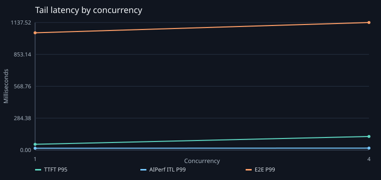
Throughput
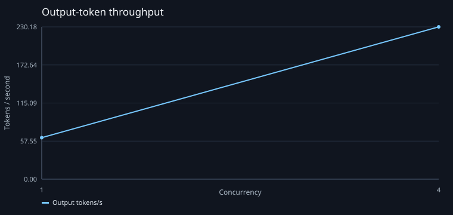
Server token rates
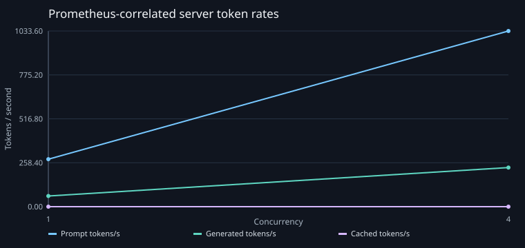
Server latency
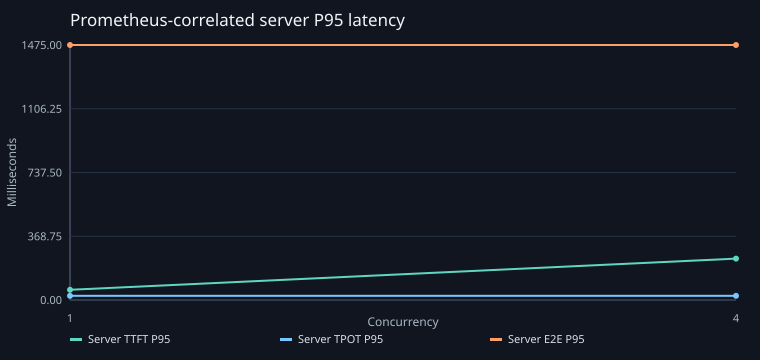
Cost efficiency
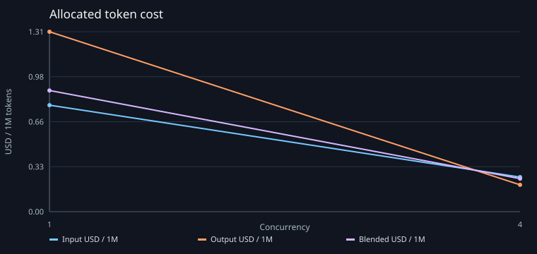
GPU efficiency
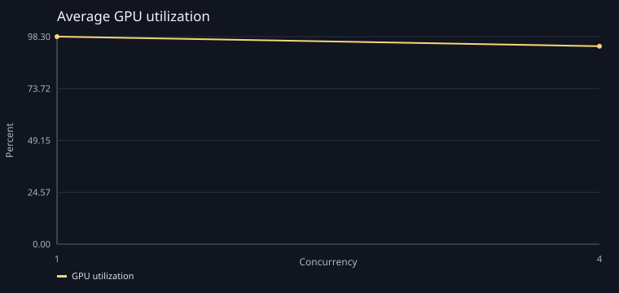
GPU memory
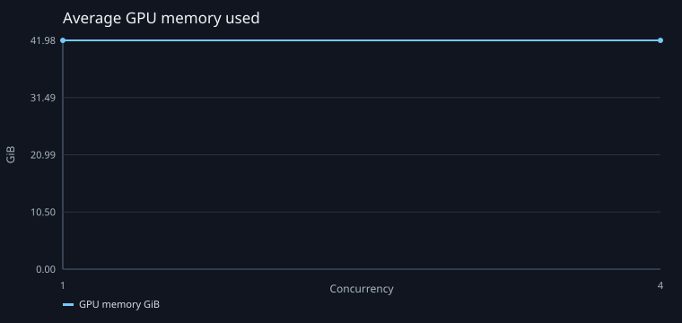
Power and temperature
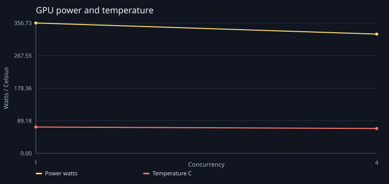
GPU PCIe traffic
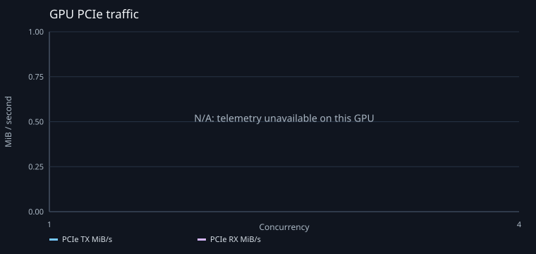
GPU clocks
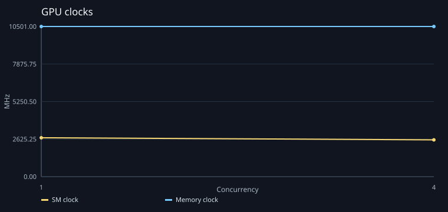
GPU health signals
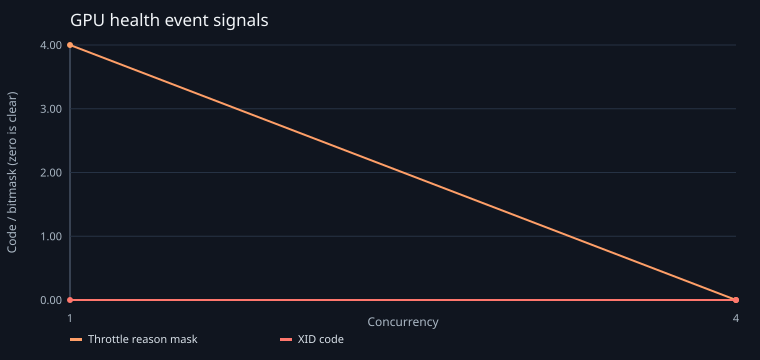
KV cache and queue
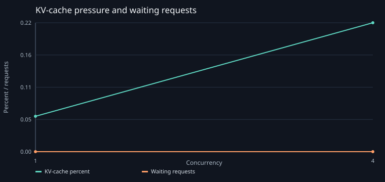
Energy intensity
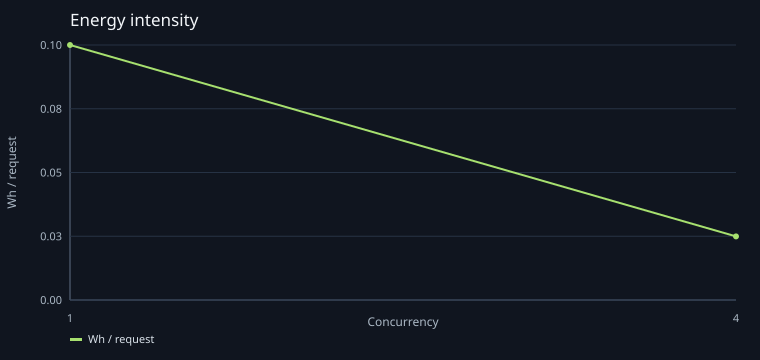
Throughput, latency, and cost frontier
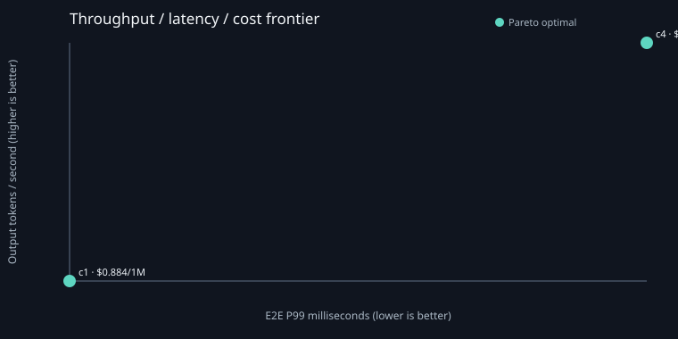
Cost reconciliation
Rate audit: $0.126202; OpenCost allocated: $0.120040; difference: $0.006162; permitted tolerance: $0.016633; status: pass.
Measured allocated / usage cost per successful request: $0.000180 / $0.000180.
Measured input / output / blended cost per million tokens: $0.5143 / $0.7539 / $0.5622.
Measured energy: 0.037884 kWh; 0.197314 kWh per million tokens.
Cost provenance
Vast.ai · 1x NVIDIA GeForce RTX 4090 48 GiB VM, 30 vCPU, 98 GiB RAM · provider-not-disclosed
Whole-node USD/hour: 0.998000; effective 2026-10-12; power included.
User-confirmed billing portal · profile SHA-256 bc85a4a63ec77d8f4625be84a1dc50018ee10349c65dfd9b10a2c84552da7405
Costs are transparent rate-based estimates, not a provider invoice. Allocated cost includes idle node time; usage cost is an efficiency view. Per-trial charges use the reviewed node hourly rate times exact elapsed time, attributed by OpenCost's model share; usage and input/output splits retain OpenCost's measured proportions. This avoids treating coarse short-window OpenCost totals as exact elapsed billing.
Reproducibility
Git commit 5ff2d4f33644bd2bfd0b912a4f1a12558601077d · tree state dirty · workspace SHA-256 785ccbe076c5aa3bc6f1f5e668b04f8499fe15e4bf56ec44f2c427633c0d7db6
AIPerf 0.12.0 · image nvcr.io/nvidia/ai-dynamo/aiperf:0.12.0@sha256:6eab5ee35be06e72c79fdd8017fcd60b08c187399dcdb3bf9b8087f7351149bf
Runtime profile qwen2.5-7b-instruct · profile SHA-256 9d19197243a00d5e37ce8dd5588e827283746249d954becdd0946d8e486a54da · NVIDIA-GeForce-RTX-4090 × 1
Serving Pod UID 984f9f35-dbac-4b6c-a60a-6f9e9cfecbdc · restart count held at 0 for the full run.
Component versions: {"aiperf":"0.12.0","cilium":"1.20.1","containerd":"2.3.4","dcgmExporter":"4.6.0-4.8.3-distroless","gpuOperator":"v26.7.0","grafanaChart":"13.2.4","helm":"3.21.4","kubePrometheusStack":"91.4.0","kubernetes":"1.36.4","nvidiaDriver":"580.95.05","opencost":"1.121.1","prometheus":"v3.14.0-distroless","vllm":"v0.29.0"}
Grafana drill-down
Data quality
Status: warning
- GPU PCIe throughput profiling was not exposed by DCGM for one or more trial windows; PCIe report values are N/A, not zero.